Are you an avid YouTube enthusiast searching for the top YouTubers in India? Whether it's for entertainment, information consumption, or even livelihood purposes, the motivations behind your quest can vary. People's preferences include educational, motivational, inspirational, and entertaining content, as well as aspiring to become influencers.
By 2024, Will India have the greatest YouTube population?
Well, Statista's January 2024 report proves that approximately 467 million people in India like to watch YouTube videos. Curiosity persists, why?
Actually, YouTube has indeed shaken-up our mindset, which ultimately directing a shift in brands' marketing strategies as well. The trend now leans heavily towards YouTubers, departing from conventional techniques such as hoardings and celebrity sponsorships. A YouTuber's magnitude in the progressing nature of advertising cannot be disregarded.
It is not surprising that top Indian YouTubers have achieved popularity due to their superior talent and boundless creativity. Their ability to produce stimulating and distinctive content is a significant contributing factor to their popularity, making it irresistibly fascinating to analyse their channels without pause.
Yet, merely acquiring a YouTube influencer is sufficient?
Absolutely not. In addition, you must identify an ideal influencer who holds relevance in your specific field and cultivate authentic user-generated content.
Why go through trouble when you have Vidzy, a remarkable video production company in India. Vidzy helps you to achieve all that and more. Our video expert supervision includes selecting the most appropriate influencer, crafting compelling scripts, upholding professional production standards, postproduction evaluation, promoting participation, and achieving ground-breaking quantifiable results. We help you collaborate with top YouTubers in India and deliver outstanding Youtuber-based videos.
As a brand, you can leverage their influence and expertise with the assistance of a professional video agency like us.
Contents
- 1. Ajey Nagar
- 2. Ajay
- 3. Ujjwal Chaurasia
- 4. Wasim Ahmad, Nazim Ahmed and Zayn Saifi
- 5. Ashish Chanchlani
- 6. Bhuvan Bam
- 7. Sandeep Maheshwari
- 8. Nischay Malhan
- 9. Amit Bhadana
- 10. Gaurav Chaudhary
- 11. Sourav Joshi
- 12. Dilraj Singh Rawat
- 13. Dr. Vivek Bindra
- 14. Periyathambi
- 15. Emiway Bantai
- 16. Rajesh Kumar
- 17. Harsh Beniwal
- 18. Nisha Madhulika
- 19. Mithilesh Patankar
- 20. Arun Prabhudesai
List of Top Indian YouTubers – Top YouTube Channels That You Should Follow in 2024
-
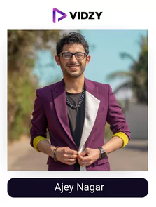
Ajey Nagar
Channel: CarryM
USP:
He calls out all the funny videos or creators and makes a unique roast on them that will make you roll on the floor laughing.
Ajey Nagar, often known online as CarryMinati or just Carry, is a 23-year-old Indian YouTuber who posts commentary, roasts, reaction videos and gaming content on his channel. For live streams, he also has a second channel called “CarryIsLive.” He was the first YouTuber in India to surpass 30 million followers and has the highest subscribers among non-corporate Indians.
Ajey began creating YouTube videos when he was 15 years old. Initially known as Addicted A1, he uploaded gameplay videos of titles like Counterstrike: Global Offensive on his channel under that name.
When he saw that his gaming-related material wasn't getting much attention, he then shifted to a commentary type of videos where he imitates Bollywood actor Sunny Deol (changing the name from Addicted A1 to CarryDeol and ultimately to carryminati), making roasts and tirade videos in front of the camera.
He won the impactful influencer of the year in mtvbuzzdigital influencer awards amongst many other awards for his amazing contribution to the world of content. Make sure you follow one of the most subscribed YouTube channels in India.
-
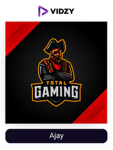
Ajay
Channel: Total Gaming
USP:
His gameplay and commentaries on it will make you hooked.
Ajay, also known as Total Gaming (sometimes referred to as Ajju Bhai) online, is an Indian YouTuber who plays the battle royale game Garena Free Fire. He is the most popular Indian YouTuber for gaming.
In 2015, Ajay began playing simple smartphone games like Clash of Clans. In 2018, as Garena Free Fire was beginning to acquire popularity in India, he began playing it after watching a couple of his friends play it. Since he lacked a mobile device capable of supporting such games, he began playing the game on his computer. He chose to enter YouTube after becoming an expert in-game mechanics, and on October 9, 2018, he launched his channel.
Up until 2020, the channel was “Free Fire-only,” but then he started broadcasting Grand Theft Auto 5 live. Later, he began growing his channel by adding Spider-Man and The Incredible Hulk to it. He was now one of India's few varieties live-streamers as a result which made him one of the biggest YouTubers in India.
-
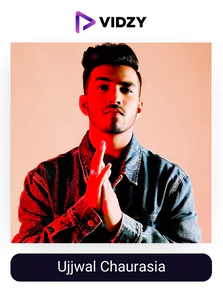
Ujjwal Chaurasia
Channel: Techno Gamerz
USP:
His gameplay and commentary is unique and never seen before making his audience an absolute fan of him.
Techno Gamerz Ujjwal is one of India's top gaming personalities or one of the most famous YouTubers in India. He started his gaming career in the middle of the 2010, and due to his interesting content, he rapidly developed a sizable fan base.
He was one of the first gamers to start learning about many games rather than simply mastering one, and he was also one of the first Indian gamers to start creating tutorials for aspiring amateur players.
“I've loved video games since I was in my early years, I would borrow a friend's phone to play or spend hours on the home computer. I later discovered that gamers post their gameplay footage online. Back then, my friends came to me for advice since they felt I was an excellent gamer. That gave me the confidence to start creating teaching videos for my friends to help them learn,” Techno Gamerz recalls of the beginning of his gaming persona.
He then converted into a profession by going onto YouTube and posting his gameplay. Today he has one of the biggest engagements in terms of gaming channels. Make sure you check out his content.
-
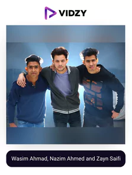
Wasim Ahmad, Nazim Ahmed and Zayn Saifi
Channel: Round2hell
USP:
They will make you laugh in each scene with their amazing execution of scripts.
Wasim Ahmad, Nazim Ahmed, and Zayn Saifi are pals who manage the community YouTube channel Round2hell which is one of the top YouTube channels in India.
The channel was first created to broadcast montages of football games. They were dismayed by the 120 views it received. They so decided to publish “Part 2” of the video, which was moderately popular and helped to increase the channel's popularity. The channel's first profits were donated to charitable organizations and foundations that support the underprivileged. At first, their parents weren't too encouraging of them, but with time, they began to have some trust in them. Their friend Alam Saifi was the one who urged them on the channel in the beginning when no one supported them.
They began to acquire fame soon after their 15th video, which was based on the March 31, 2017, incident when it was rumoured that the Indian telecom provider Jio would be shut down, went viral. Now they have the most unique content and hilarious scripts to make you laugh uncontrollably. Make sure you subscribe to them!
-
Ashish Chanchlani
Channel: Ashish Chanchlani Vines
USP:
He provides short comedy movies on his channels that are a great amalgamation of amazing comedy and storytelling.
Ashish Chanchlani, an Indian YouTuber and comedian (born December 7, 1993; age 28), is most known for his parodies and humorous videos. He began his career on Vine, earning the term “Ashish Chanchlani vines,” before switching to Instagram and then YouTube. Due to his commitment to giving his viewers something worthwhile, Ashish Chanchlani is one of the most popular YouTubers in India.
2016 saw Ashish make his television debut on the hit program Pyaar Tune Kya Kiya. His performance earned him a lot of respect. Shahid Kapoor, Akshay Kumar, Kartik Aryan, and many other popular Indian actors have also been in touch with him several times to promote their films.
-
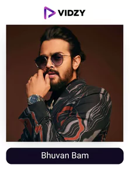
Bhuvan Bam
Channel: BB Ki Vines
USP:
He will provide you with the most unique comedy content where all of the major characters are played by him.
Bhuvan Bam is the first name that comes to mind when we think about Indian comedy or one of the biggest YouTubers in India. For its millions of viewers, “B.B. ki vines” often publishes little comedic skits. He recounts the events of B.B.'s daily life, and Bhuvan himself portrays every role. He received a Filmfare award in addition to being included on Forbes' list of the 30 under 30 for his excellent portrayal of skills.
He signed up for the platform in 2015, and since then, 171 videos have been uploaded on his channel. He takes part in several initiatives for the society for e.g. – he made a video in a village and gave all the earnings to daily wage earners, he donated massively to the PM cares fund, etc.
He is one of the most popular YouTubers in India thanks to his ability to connect with his audience through his variety of content and social messages. Over 88% of people believe authenticity to be one of the major factors in choosing their favourite influencers as per Deloitte, if you believe it too Bhuvan will not disappoint you. Make sure you check his content out!
-
Sandeep Maheshwari
Channel: Sandeep Maheshwari
USP:
He will make your dreams into reality with his right guidance or expertise.
Sandeep Maheshwari, an Indian businessman, photographer, and motivational speaker, is well-known among young people. Additionally, he is the creator and CEO of Imagesbazaar.com, the largest repository of Indian stock photos, which has helped him become one of India's most rapidly expanding businessmen. More than 1 lakh Indian models with 1100 photographers are available on this website.
He is regarded as a special entrepreneur since he put up relatively little effort to achieve success and more into making a change in the society. Additionally, he is well known for his free, motivational “Life-Changing Seminar.” The fact that he has over 24 million subscribers to his unmonetized YouTube channel, reflects how much his followers believe in him and his advice making it one of the top YouTube channels in India 2022.
-
Nischay Malhan
Channel: Triggered Insaan
USP:
He has the most entertaining gameplay and reaction videos due to his no-filter opinions.
Triggered Insaan, an online alias for Nischay Malhan, an Indian YouTuber and Minecraft and GTA live-streamer based in New Delhi, is well-known for his commentaries, roasts, rants, and reaction videos on his channel that frequently focus on Bollywood and Indian media as well as social media influencers.
He used to stay up late and record videos while working, and after he had about 100k subscribers, he quit and started working as a full-time YouTuber. After that, he kept uploading videos to YouTube, and over time, he established himself as a popular and successful YouTuber.
Today, each of his videos has millions of views and a great number of comments just adoring the unique content he puts up regularly making him one India’s top YouTubers.
-
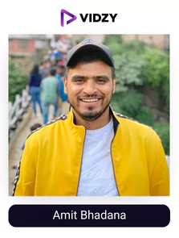
Amit Bhadana
Channel: Amit Bhadana
USP:
He has comedy and a social message mixed in all of his content which each member of your family can watch as he uses no foul language.
Amit Bhadana now has more than 24 million subscribers and is one of India’s Top YouTubers. He was born on September 7, 1991, and he is from Faridabad. He first kept his channel a secret from his parents out of fear for them.
Amit Badhana makes humorous films, and many of them include slice-of-life content, relationships, and hilarious sketches. He just does not want to stop producing videos, and because Akshay Kumar and Aamir Khan are his inspirations, his goal is to create material in a complete Bollywood movie manner.
He has been successful to do it and has recently launched a comedy-style movie named Amit Bhadana LLB. make sure you check out his content!
-
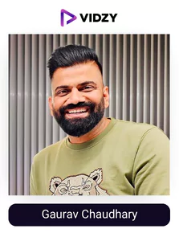
Gaurav Chaudhary
Channel: Technical Guruji
USP:
He is the most consistent Indian YouTuber and provides amazing reviews and more of each and every technology.
Engineer and YouTuber Gaurav Chaudhary, sometimes known online as Technical Guruji, is from India. He is renowned for creating Hindi-language technology-related YouTube videos.
In October 2015, Chaudhary began his Technical Guruji channel, where he mostly shared advice and product evaluations. The channel immediately gained popularity, and in 2017 Chaudhary started a second channel where he posts videos about his personal life.
The Technical Guruji channel of Gaurav kept expanding quickly. Technical Guruji was listed as the 9th most subscribed tech YouTube channel in September 2018. According to a report from November 2018, Chaudhary became the first tech YouTuber to reach more than 10 million subscribers.
Even today he is one of the most subscribed tech YouTube channels in the world owing to his way of presentation, the educational and decision-making insights he provides, and connect he's been able to make with his audience.
-
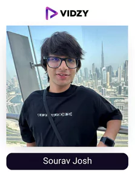
Sourav Joshi
Channel: Sourav Joshi Vlogs
USP:
He has the most authentic approach when it comes to vlogging or showing his daily life which connects instantly with the audience.
By depicting and documenting his actual life on video, this 22-year-old YouTuber has captured the hearts of his followers. He records amusing videos with his loved ones and pals. His younger brother Piyush gives his Vlogs a playful touch.
This is his second channel; the first, “Sourav Joshi Arts,” is devoted to his paintings and has more than 3.6 million members. However, He now concentrates most of his efforts on his daily vlogging channel.
His dedication to providing his audience with something new and fun to watch is adored by his subscribers due to which he is one of the fastest growing youtubers in India.
-
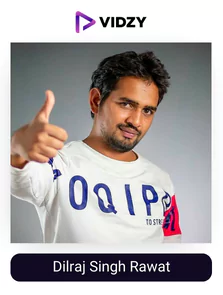
Dilraj Singh Rawat
Channel: Mr. Indian Hacker
USP:
He will provide you with the craziest experiments that are a treat to watch.
Dilraj Singh Rawat, often known as Mr. Indian Hacker, is an Indian YouTuber who posts experiments for educational purposes.
Dilraj started off by pursuing a profession on YouTube. Instead of seeking degrees based on academic understanding, he was more interested in expanding his practical expertise.
He had no prior knowledge of being a YouTuber at the time. As his YouTube career progressed, he acquired the skills necessary to produce expert films and conduct tests securely. He refers to his followers as the “Titanium Army,” and the disclaimers in his videos read, “We have titanium in our blood!”
His video of running a bike on water has over 69 million views making it his most popular video. He has amazing consistency, and his audience is really loyal to him. Make sure you check out his content!
-
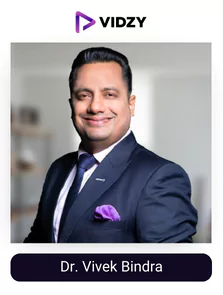
Dr. Vivek Bindra
Channel: Dr. Vivek Bindra: Motivational Speaker
USP:
He will show you the right path to make a change to do something valuable in life through his expertise.
One of the World's Greatest Influencers, Dr. Vivek Bindra is the CEO and founder of Bada Business. He is also an international motivational speaker, leadership consultant, corporate trainer, and inspirational business coach. He has set eight Guinness World Records for the largest webinars on various subjects.
His YouTube channel is one of the most subscribed YouTube channels in India or entrepreneurship channel in the world with 19.5 million subscribers and 1.5 billion viewers. With more than 10 million Followers & 147 million Reach, his Facebook page is the entrepreneurial community with the fastest growing audience. Across social media platforms, he has more than 32 million followers, and his videos have received more than 5.76 billion views. Make sure you check out his content!
-
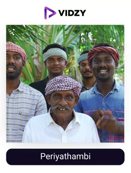
Periyathambi
Channel: Village Cooking Channel
USP:
They will teach you to make all the delicious traditional food with minimum easy-to-get ingredients.
The face of The Village Cooking Channel is Periyathambi. This 83-year-old chef from Tamil Nadu has gained internet fame. For the past 50 years, he has been preparing meals for the locals.
The group of five, including Periyathabi, prepares a range of non-vegetarian foods in an authentic, traditional style that you can follow easily. The astounding aspect is the enormous amount of food they prepare and serve.
Their food salad video has over 127 million views! That's more than some of the YouTuber's total views reflecting the quality of content they have been delivering and how the audience is perceiving it. Make sure you check out the content of one of the most famous YouTubers in India 2022!
-
Emiway Bantai
Channel: Emiway Bantai
USP:
He has an amazing ability to connect with his audience through authentic writing and rapping.
In Indian hip-hop, Emiway Bantai possesses its own niche and is one of the biggest YouTubers in India. The multilingual rapper Emiway, who raps in Hindi, English, Marathi, and Tamil, has become a phenomenon in just over eight years. His Emiway Bantai emblem stands for a true viral smash or nothing – with views well into the billions and counting!
While his first English song, “Glint Lock (feat. Minta),” which was released in 2013 when he was 18 didn't do much to catch on, his subsequent songs, “Aur Bantai” from 2014 and especially the 2019 track “Machayenge” (which went viral on the now denaturalized TikTok) caught the attention of a large global audience and made Emiway a household name by accident.
Currently, the creative businessman is in charge of the Mumbai-based label Bantai Records. he is ruling hip-hop. Make sure you check his content out!
-
Rajesh Kumar
Channel: Techfactz
USP:
He will provide you with science-backed educational videos that will enrich your knowledge.
Our brain enjoys receiving little bits of information. By producing brief, informative movies on basic knowledge, Fact Techz achieves just that. He will educate you on topics you observe every day but never thought to inquire about.
For instance, the science underlying biscuit holes. Not only that, but he also has a variety of videos based on spooky happenings and fascinating information from all around the globe.
His most popular video in which he explained how to do palm reading has over 44 million views. Each of his videos does so well because he has cracked the area, he needs to hit which is curiosity, each person is curious to know topics that he covers even if they don’t plan on implementing it anywhere. This makes him No 1 YouTuber in India 2024
-
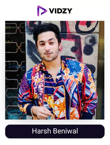
Harsh Beniwal
Channel: Harsh Beniwal
USP:
He makes short comedy movies with various characters and a gripping storyline.
Indian YouTuber Harsh Vardhan Beniwal specializes in humour and video games. He has always been interested in acting. He began posting brief comedic sketches on Instagram in 2013, which helped him gain popularity and eventually launch his own YouTube channel. He made his television acting debut in India with the web series Who's Your Daddy, which was broadcast on Alt Balaji, and subsequently entered Bollywood with the movie Student of the Year 2.
Today, each of his videos crosses 10 million views easily and his fans just adore the amount of perfection he achieves with each element in his videos and how he never fails to tickle the funny bone. He is amongst the favourite influencers for brands to collaborate with owing to the connection he possesses with his audience making him one of the biggest YouTubers in India.
-
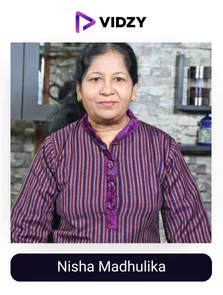
Nisha Madhulika
Channel: Nisha Madhulika
USP:
She will make your favourite food items easy to make with her step by step easy to follow recipes.
Nisha is an Indian woman who has gained popularity on YouTube for her vegetarian cooking tutorials. Her Hindi-language videos have made her a household name among housewives.
She works as a chef, consults for restaurants, and writes about cuisine for a number of well-known websites, including Dainik Bhaskar, Times of India, Amar Ujala, and Indian Express.
Her petha sweet recipe has over 45 million views making it one of the most viewed videos on her channel. She makes sure she is consistent with her content and always puts up the highest quality you find on the platform.
With the number of views and appreciation she gets, it can be surely said that she has been successful in her approach.
-
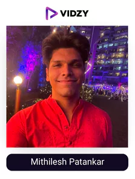
Mithilesh Patankar
Channel: Mythpat
USP:
He has a unique and entertaining way of commentary while playing the best games right now.
Mithilesh Patankar, often known online as Mythpat, is an Indian YouTuber who plays GTA and Minecraft and uploads humorous gaming videos to the site.
Mythpat started off on YouTube by publishing instructional cameo videos with PUBG and GTA 5. He used “mods” when playing Grand Theft Auto 5. He played pranks on players on PUBG by mimicking well-known Indian actors, with his most well-known performance being that of Hrithik Roshan.
He reacts to memes and funny videos as well. All his videos get millions of views as he has cracked the presentation skills of his content which is unique and really hard for others to copy making him one of the biggest YouTubers in India.
-
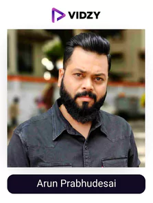
Arun Prabhudesai
Channel: Trakin Tech
USP:
He reviews tech products in the most simplistic and entertaining way.
Trakin Tech is a YouTube channel renowned for its unpacking and gadget reviews. Digital media firm Armoks Interactive labs was formed by Arun Prabhudesai with trakin tech as a subsidiary.
You may discover tech news and stories here in addition to evaluations of the newest products. Trakin Tech Marathi, Trakin Tech English, Trakin Auto, Trakin shorts, TKF shorts, and Trakin Ke Funde are just a few of the channels he also manages.
His reviews cover every aspect you need to know regarding the tech in simple-to-understand language. He makes sure to entertain his audience with all the educational information to keep his content gripping.
His videos like “mi 11 Pro” getting more than 11 million views just shows that he has been successful in making his content superior and a treat to watch.
To Sum Up
Our video company help these Influencers or Top YouTubers in India, to create unique content with freedom, and at the same time making them execute your specific objectives and convey brand’s message through visuals.
Vidzy the top video production company has broken this chain by employing its years of expertise, good influencer relations, and a mission statement of making it easy for the brands like yours to get the most out of it or save time and scale the businesses to the next level.
So, make sure you get in touch with them to enter the world of the marketing revolution!